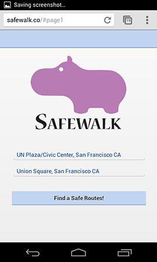
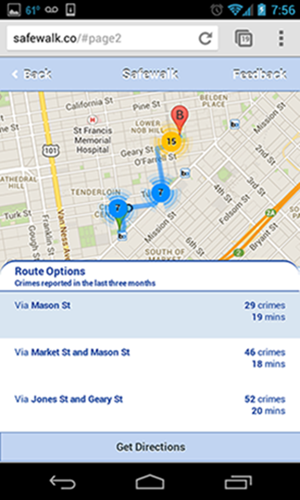
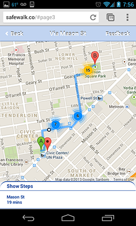
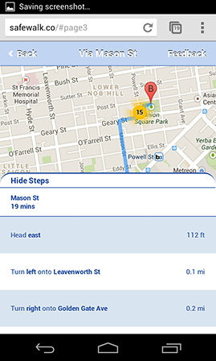
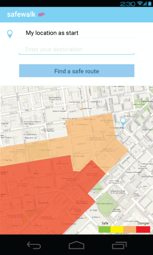
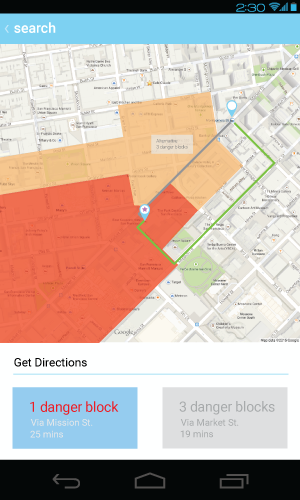

Safewalk
Hackathon, Mobile App
2nd Place winner at the AT&T Mobile Hackathon. I with two other developers, delivered a mobile app that provides users recommendations on the safest walking route to their destination based on crime reports.
My role was to create all design assets, wireframe the interaction, and write the javascript algorithm for route selection. Post hackathon I also gathered user feedback and updated the designs.
Safewalk provides users crime statistics and time information at the street level so users chooses the best route based on crime and speed.
Why create safewalk?
During a trip to San Francisco, I was ambushed and robbed near the Blue Bottle cafe by Union Square. When I spoke to the police, they informed me that crime rates had been rising. SF Examiner reports that there's been a double-digit jump in thefts and robberies. The police mentioned it was especially bad by 3rd and Mission. Everything before that "line" was ok, but once you past the line that where travelers run into trouble. Unfortunately I was new to the area, and I wasn't aware.
Checking crime information is not part of people’s everyday workflow. Popular mapping apps like Google Maps recommend map routes to optimize for SPEED of getting from point A to point B. Waze, recently acquired by Google, provide real time traffic reports like “Police” but rather than raise awareness of police crime reports the “Police” feature helps users evade cops and avoid traffic tickets.
Other apps like crimespotting attempt to raise awareness of crimes in an area by providing a mapping visualization. This is not a great solution in a scenario when users need to be able to quickly look for directions on the go. Crimespotting data is too high level and doesn't recognize data based on your location so you can easily assess your situation. Using crimespotting, users need to carefully inspect and consume the map information which most users will not do.
Building Safewalk at AT&T Hackathon
Data, data, data
Our team brainstormed and researched on what data can help users understand the safety of their routes. We hypothesized that the amount of crime reports and street lights could be great start. We found that the Open Data project San Francisco data provides crime reports with lat, long information.
The challenge now was to incorporate the data into our algorithm to find people safe routes. By collecting a set of routes from map APIs like Google Maps, we could then integrate the crime data at the street level !
Hackathon Mobile Screenshots
- 
User enters the route
- 
Route recommendations
- 
Blue indicates safer spots
- 
Step by step route information
Getting User Feedback and Exploring New Designs
After the hackathon, we each asked 10 friends to test our mobile app to get feedback. As the main designer for the app, I collected the feedback and identified 3 major problems.
- Map visualization is hard for our users to understand. Users don’t understand the difference in the colors
- Users need a way to disambiguate and verify their destinations so they feel confident about the route
- Users are confused by the mix of Android and iOS-like mobile patterns
Improving our map visualization so users can quickly decide what route to take
Improving the map visualization was one of the most difficult design challenges. The map needs to communicate many key pieces of information - the route, why we are recommending this route, the necessary crime information, how to understand the crime information, and how you can interact and customize the map. Most users are only able to pick up 3-4 pieces of information at a glance. We wanted users to be able to quickly rationalize the information they are seeing.
My new designs solves this problem by
- adding a legend so users can understand what each of the colors mean
- overlaying a heatmap of the dangerous “zones” so users can quickly identify danger spots in their route
- adding a text overview of the danger zones users will pass by to help users quickly select their route
- 
A heatmap helps identify danger
- 
A text overview helps compare routes
Disambiguating and verifying destinations
It’s common in mapping programs to have prepopulate the start location with their current location and provide autosuggest functionality to help users quickly select the correct destination. I also decided to include a map below the start and end location so users can visually verify the locations.
Android design patterns
One of the feedback we received was that the design should follow common mobile platform design patterns. We decided to focus on the Android platform, and updated our app to follow common Android patterns such as including the “Up” button on all our screens and removing the rounded corners look. We also leveraged the free Android vector design pack that Google provides.
Final Thoughts
This is a very interesting problem for me because I have been personally impacted by this and know firsthand how useful this can be for people. My goal in doing these explorations is to create and share designs and algorithmns that can help protect people from preventable misfortunes so we can all enjoy our travels without additional worry. If you work on a mapping application and would like to hear more, feel free to contact me :)